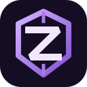

A calmer YouTube. Clean surfaces, considered spacing, and your own accent color.
Optional layout and typography controls. The main dashboard stays simple; these settings apply live when YouTube is open.
This changes the interface, not YouTube's account or video stream. Refresh an open YouTube tab once after updating the extension.